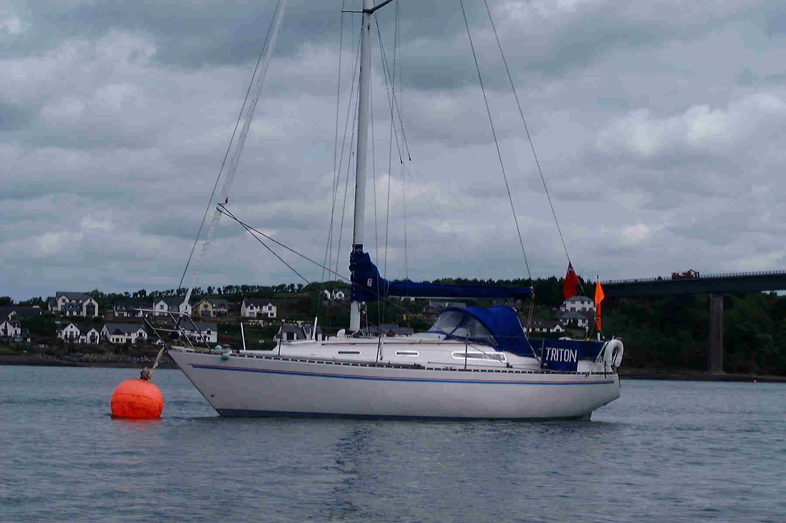

Counter
Contents
- Boat Links
- Sail 2006 2006 video
- Scillies and Dartmouth 2005 Video's Picture Gallery
- Brittany Photos 2004 Buffy the pigeon A French Bag A Light in the Dark Video's
- WAP phones and the Met Office
- Watchet Bank Holiday
- The Cove, St Agnes
- Padstow & Isles of Scilly photo's and account
- Triton
- Eilidh!
- Year of the Engine 2000
- Irish Trip 1999
- Swansea to Eddystone 1998
- Spinnaker Virgin
- Eilidh, Halcyon 27
- Carlin de Montfort, famous Cherub sailor
- Water Sports Wales
- Authors Business
- Triton-Marine Sailing LED's
- Swansea Yacht Club Web Camera
- E-mail comments to Mark Johnson

Triton, Sadler 32